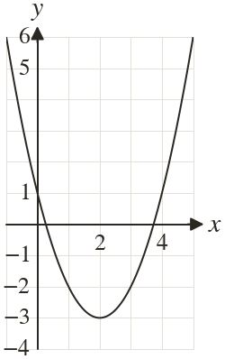
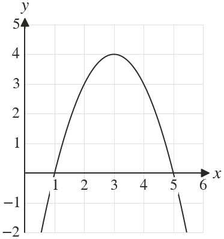

Westonbirt Maths · Quadratics and Their Graphs
Symmetry and the Turning Point
Name: ______________________ Date: ____________
1
The graph of is drawn. Write down its turning point and its line of symmetry.

2
The graph of is drawn. Write down its turning point and its line of symmetry.

3
A valley has its lowest point at Sam writes its line of symmetry as
What is his mistake?
What is his mistake?
4
The curve turns where
Find its turning point.
Find its turning point.
5
A hill has its highest point at Write down its line of symmetry. What kind of turning point is it?
Ext
crosses the x-axis at and
Find its line of symmetry and its turning point.
Find its line of symmetry and its turning point.